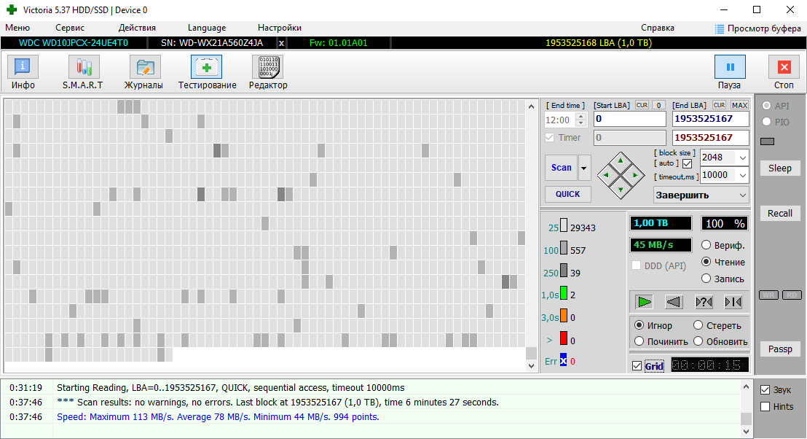
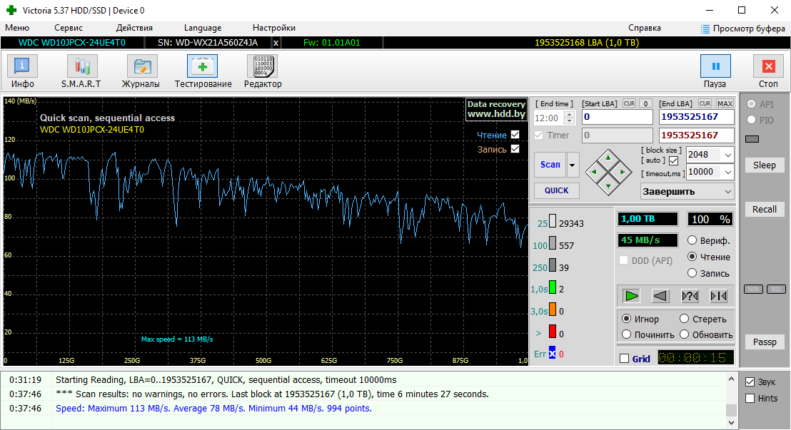

☰
Диагностика неисправностей ПК
Тестирование жёсткого диска можно провести с помощью программы Victoria. В программу встроен мощный сканер поверхности HDD, который позволяет продиагностировать накопитель на наличие сбойных участков, плавающих дефектов и ошибок интерфейса.
В программе Victoria применен усредняющий метод построения графика. Графический метод является очень наглядным, и дополняет основной режим.
 У исправного HDD график представляет собой плавно спадающую вниз линию,
на которой обычно видны ступеньки.
У SSD идеальный график – прямая
линия. Наличие провалов скорости свидетельствует об износе микросхем
памяти или особенностях работы контроллера SSD.